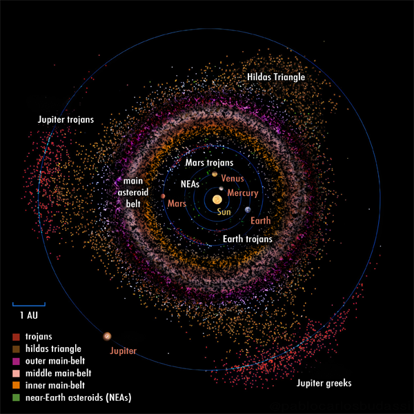

Location of Jupiter trojans (red) and other asteroids; Hildas (brown), asteroid belt (pink, beige, orange), near-Earth asteroids (green). Source
Trojans are minor planets that orbit around the L4 and L5 Lagrange points of planets.
Trojan populations that are considered asteroids extend up to Jupiter.
The only planet not to have any known trojans is Mercury.
Jupiter features the highest population of trojans.
Hektor is the largest of the trojan asteroids and is the 12th largest overall.
The Lucy mission by NASA is expected to visit several Trojan asteroids, starting with Eurybates in 2027.
Other planets have much less trojans, since they do not have a gravitational field as strong as Jupiter, or are not close to the asteroid belt.
However, there might be bias towards Jupiter, which is closer to Earth than Neptune.
Instead of being close to the asteroid belt, Neptune has the Kuiper belt outside its orbit.
Achiles was the first trojan of Jupiter to be discovered in 1906 by Max Wolf.

Lagrange points, highlighted in red. Trojans orbit close to the L4 and L5 points. Source
Trojans are in a co-orbital configuration characterized by a stable orbit around the common barycenter close to either of the two Lagrange points 60° ahead and behind the respective planet.
These points are refered to as L4 and L5 respectively.
Relative to the planet, a trojan seems to orbit the point itself.
A rare type of trojan is a jumping trojan that originates from one of these two points, but intermittenly follows the L3 point before settling to the opposite end.
One such example is 2010 EN65, a Neptunian trojan.
A large group of asteroids co-orbits with Jupiter.
They are named after characters from Greek mythology that have fought in the Trojan war, hence the name.
These asteroids are divided into two groups: the Greek camp, clustered around the leading Lagrange point (L4), and the Trojan camp, around the trailing Lagrange point (L5).
The largest L4 trojans have Greek names, while the L5 have Trojan names.
Exceptions are Hektor (a Trojan prince) and Patroclus (a Greek hero), which are part of their respective enemy camp, as they were named before the convention.
As of August 2025, there are 15,283 trojan asteroids according to the Minor Planet Center.
The Greek camp contains 9,691 known trojans, with the largest being Hektor, Agamemnon, and Achilles.
The Trojan camp, meanwhile, includes 5,592 known asteroids, with the most prominent being the binary Patroclus-Menoetius, Mentor, and Paris.
Other planets, with the exception of Mercury also have their own co-orbiting minor planets.
They are also called trojans in reference to the Jovian ones.
However, these planets have considerably less trojans.
Earth, for example, has two known trojans - 2010 TK7 and 2020 XL5.
Neptune has the second highest count of known trojans.
Due to its distance from Earth, there are likely many more to be discovered and likely have a count closer to that of Jupiter than the other planets.
A naming convention was created according to which Neptune trojans are to be given names.
2011 WG157 and 2015 VU207 are possibly the largest of the population, the latter also having the highest inclination.
Helene, a trojan of Dione, and Telesto and Calypso, trojans of Tethys
The moons Dione and Tethys of Saturn have each two trojan moons.
These are Helene and Polydeuces of Dione and Telesto and Calypso of Tethys.
No other known examples of trojan moons are known, although there are other co-orbital moons - Janus and Epimetheus, also moons of Saturn.
So far, no trojan has been explored from up-close.
Lucy is a NASA mission that will be the first to visit the Jupiter trojans.
On its way to the system, the spacecraft has already encountered the main-belt asteroids Dinkinesh and Donaldjohanson.
When it reaches the Greek camp, it will make flybys of four asteroids - Eurybates, Polymeles, Leucus, and Orus.
After that, it will go to the Trojan camp, making a flyby of the binary Patroclus-Menoetius.
External links
{% include catminor-planets.html %}
{kind=link}
{kind=link}